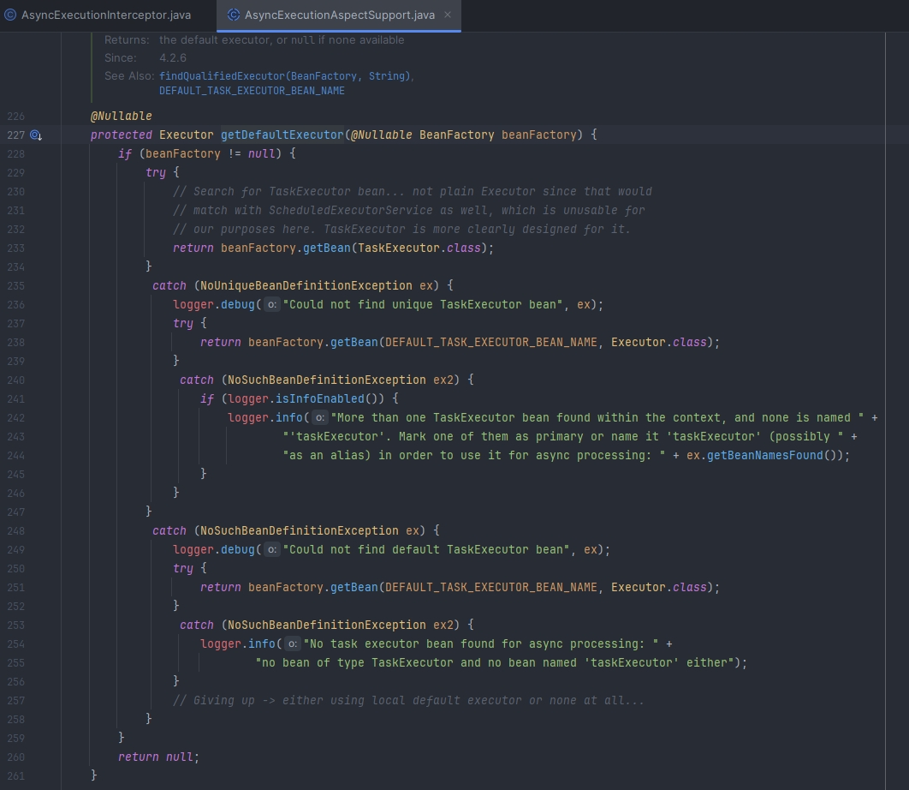
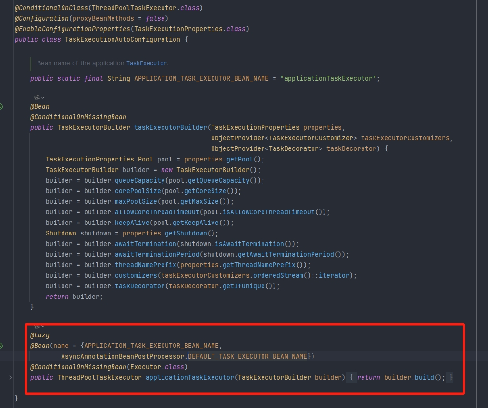
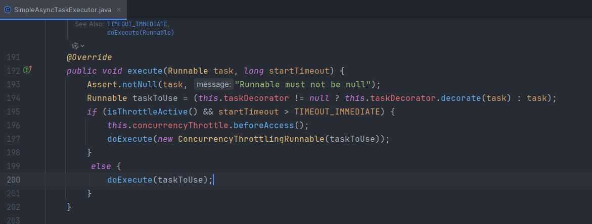
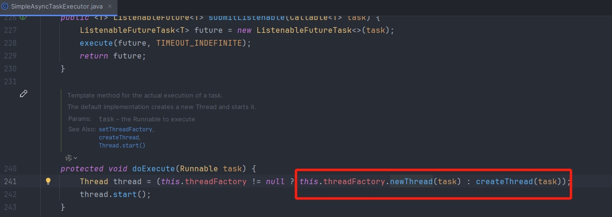
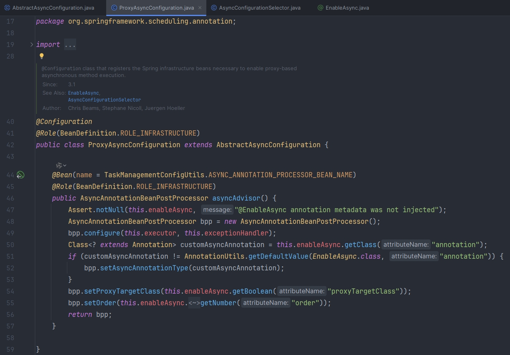

SpringBoot Async异步调用 | 总字数: 3.1k | 阅读时长: 13分钟 | 浏览量: |
基本使用
异步调用
在使用@Async 之前，我们需要确保已经启用了 Spring 的异步任务执行功能，这通常通过在配置类上添加@EnableAsync 注解来完成
1 2 3 4 5 6 7 8 @SpringBootApplication @EnableAsync public class Async01Application { public static void main (String[] args) { SpringApplication.run(Async01Application.class, args); } }
未使用@Async
1 2 3 4 5 6 7 8 9 10 11 12 13 14 15 16 17 18 19 20 21 22 23 24 25 26 27 28 @Component public class Task1 { public static Random random = new Random (); public void doTaskOne () throws InterruptedException { System.out.println("start 任务1...." ); long start = System.currentTimeMillis(); Thread.sleep(random.nextInt(10000 )); long end = System.currentTimeMillis(); System.out.println("任务1耗时：" + (end - start)); } public void doTaskTwo () throws InterruptedException { System.out.println("start 任务2...." ); long start = System.currentTimeMillis(); Thread.sleep(random.nextInt(10000 )); long end = System.currentTimeMillis(); System.out.println("任务2耗时：" + (end - start)); } public void doTaskThree () throws InterruptedException { System.out.println("start 任务3...." ); long start = System.currentTimeMillis(); Thread.sleep(random.nextInt(10000 )); long end = System.currentTimeMillis(); System.out.println("任务3耗时：" + (end - start)); } }
使用@Async
1 2 3 4 5 6 7 8 9 10 11 12 13 14 15 16 17 18 19 20 21 22 23 24 25 26 27 28 29 30 31 @Component public class Task2 { public static Random random = new Random (); @Async public void doTaskOne () throws InterruptedException { System.out.println("start 任务1..." ); long start = System.currentTimeMillis(); Thread.sleep(random.nextInt(10000 )); long end = System.currentTimeMillis(); System.out.println("任务1，耗时" + (end - start)); } @Async public void doTaskTwo () throws InterruptedException { System.out.println("start 任务2..." ); long start = System.currentTimeMillis(); Thread.sleep(random.nextInt(10000 )); long end = System.currentTimeMillis(); System.out.println("任务2，耗时" + (end - start)); } @Async public void doTaskThree () throws InterruptedException { System.out.println("start 任务3..." ); long start = System.currentTimeMillis(); Thread.sleep(random.nextInt(10000 )); long end = System.currentTimeMillis(); System.out.println("任务3，耗时" + (end - start)); } }
使用两个方法进行比较
1 2 3 4 5 6 7 8 9 10 11 12 13 14 15 16 17 18 19 20 21 22 23 24 @SpringBootTest class Async01ApplicationTests { @Autowired private Task1 task1; @Autowired private Task2 task2; @Test void test1 () throws InterruptedException { task1.doTaskOne(); task1.doTaskTwo(); task1.doTaskThree(); } @Test void test2 () throws InterruptedException { task2.doTaskOne(); task2.doTaskTwo(); task2.doTaskThree(); TimeUnit.SECONDS.sleep(10 ); } }
未使用@Async 执行结果
1 2 3 4 5 6 start 任务1. ... 任务1 耗时：1498 start 任务2. ... 任务2 耗时：1967 start 任务3. ... 任务3 耗时：9994
使用@Async 执行结果
1 2 3 4 5 6 start 任务1. .. start 任务3. .. start 任务2. .. 任务2 ，耗时664 任务1 ，耗时2378 任务3 ，耗时4973
可以看出，未使用@Async 时所有任务是串行执行的，只能等上一个任务执行完毕才能执行下一个，而使用@Async 后任务是并发执行的
异步返回结果
注意：被@Async 标注的方法必须是 void 类型的，且不能有返回值，除非返回类型是 Future，这样可以通过 Future 获取异步操作的结果
1 2 3 4 5 6 7 8 9 @Component public class AsyncTask { @Async public Future<String> asyncTask2 () { System.out.println("asyncTask2 start....." ); return new AsyncResult <String>("hello world" ); } }
1 2 3 4 5 6 7 8 9 10 11 12 13 14 @Autowired private AsyncTask asyncTask;@Test void test3 () throws ExecutionException, InterruptedException { Future<String> future = asyncTask.asyncTask2(); while (true ){ if (future.isDone()) { System.out.println(future.get()); break ; } } }
异常处理
1 2 3 4 5 6 7 8 9 10 11 @Component public class AsyncExceptionHandler implements AsyncUncaughtExceptionHandler { private final Logger logger = LoggerFactory.getLogger(AsyncExceptionHandler.class); @Override public void handleUncaughtException (Throwable ex, Method method, Object... params) { logger.error("@Async调用异常，出现异常的方法：{}，参数：{}，异常信息：{}" , method.getDeclaringClass().getName() + "." + method.getName(), JSON.toJSONString(params), ex.getMessage()); } }
1 2 3 4 5 6 7 8 9 10 11 @Configuration public class AsyncConfig extends AsyncConfigurerSupport { @Autowired private AsyncExceptionHandler asyncExceptionHandler; @Override public AsyncUncaughtExceptionHandler getAsyncUncaughtExceptionHandler () { return asyncExceptionHandler; } }
1 2 3 4 5 6 7 8 9 10 11 12 13 14 @Component public class Task3 { public static Random random = new Random (); @Async public void doTaskOne () throws InterruptedException { System.out.println("start 任务1..." ); int i = 1 / 0 ; long start = System.currentTimeMillis(); Thread.sleep(random.nextInt(10000 )); long end = System.currentTimeMillis(); System.out.println("任务1，耗时" + (end - start)); } }
1 2 3 4 5 6 7 8 @Autowired private Task3 task3;@Test void test4 () throws InterruptedException { task3.doTaskOne(); TimeUnit.SECONDS.sleep(10 ); }
1 2 3 start 任务1. .. 2024 -11 -22 09:12 :45.828 ERROR 20716 --- [ task-1 ] c.e.a.d.config.AsyncExceptionHandler : @Async 调用异常，出现异常的方法：com.example.async.demos.config.Task3.doTaskOne，参数：[]，异常信息：/ by zero
线程池配置
默认线程池
SpringBoot 从 2.1 开始使用的是 ThreadPoolTaskExecutor 线程池，之前使用的是 SimpleAsyncTaskExecutor，查看 AsyncExecutionInterceptor 源码中的 getDefaultExecutor 方法，会先去找名称为 taskExecutor 的 Bean，如果找不到才使用 SimpleAsyncTaskExecutor
注意：名称为 taskExecutor 的 Bean 在 TaskExecutionAutoConfiguration 会被实例化


ThreadPoolTaskExecutor
此线程池的默认参数（由 SpringBoot 配置 TaskExecutionProperties），核心线程数 8，队列容量不限，最大线程数不限。如果业务逻辑需要执行的时间比较长，或者由于代码缺陷导致核心线程不能被释放，那么队列中的任务会越来越多且不会被执行。因此使用@Async 必须配置自定义线程池，或者修改默认线程池参数
SimpleAsyncTaskExecutor
此线程池会一直创建新的线程，失去了线程池的优势，不推荐使用，若系统中不断地创建线程，最终会导致系统占用内存过高，引发 OutOfMemoryError 错误。
针对线程创建问题，SimpleAsyncTaskExecutor 提供了限流机制，查看 ConcurrencyThrottleSupport 源码中的 beforeAccess 方法，通过 concurrencyLimit 属性来控制开关，当 concurrencyLimit >= 0 时开启限流机制，默认关闭限流机制即 concurrencyLimit =-1，当关闭情况下，会不断创建新的线程来处理任务。基于默认配置，SimpleAsyncTaskExecutor 并不是严格意义的线程池，达不到线程复用的功能


线程池修改
配置文件修改
1 2 3 4 5 6 7 8 9 10 spring.task.execution.pool.core-size =200 spring.task.execution.pool.max-size =1000 spring.task.execution.pool.keep-alive =3s spring.task.execution.pool.queue-capacity =1000 spring.task.execution.thread-name-prefix =test-thread-
@Async 异步方法默认使用 Spring 创建 ThreadPoolTaskExecutor（参考 TaskExecutionAutoConfiguration）
默认核心线程数：8
最大线程数：Integet.MAX_VALUE
队列使用：LinkedBlockingQueue
容量是：Integet.MAX_VALUE
空闲线程保留时间：60s
线程池拒绝策略：AbortPolicy
自定义线程池
1 2 3 4 task.pool.corePoolSize =20 task.pool.maxPoolSize =40 task.pool.keepAliveSeconds =300 task.pool.queueCapacity =50
1 2 3 4 5 6 7 @SpringBootApplication @EnableAsync public class Async02Application { public static void main (String[] args) { SpringApplication.run(Async02Application.class, args); } }
1 2 3 4 5 6 7 8 9 10 11 12 @Component @ConfigurationProperties(prefix = "task.pool") @Data public class TaskThreadPoolConfig { private int corePoolSize; private int maxPoolSize; private int keepAliveSeconds; private int queueCapacity; }
1 2 3 4 5 6 7 8 9 10 11 12 13 14 15 16 17 18 19 20 21 22 23 24 25 26 27 28 29 30 31 32 @Configuration public class TaskExecutePool { @Autowired private TaskThreadPoolConfig config; @Bean public Executor myTaskAsyncPool () { ThreadPoolTaskExecutor executor = new ThreadPoolTaskExecutor (); executor.setCorePoolSize(config.getCorePoolSize()); executor.setMaxPoolSize(config.getMaxPoolSize()); executor.setQueueCapacity(config.getQueueCapacity()); executor.setKeepAliveSeconds(config.getKeepAliveSeconds()); executor.setThreadNamePrefix("myExecutor-" ); executor.setRejectedExecutionHandler(new ThreadPoolExecutor .CallerRunsPolicy()); executor.setWaitForTasksToCompleteOnShutdown(true ); executor.setAwaitTerminationSeconds(60 ); executor.initialize(); return executor; } }
通过指定@Async 中的值去找对应的 Bean，从而获取自定义的线程池
1 2 3 4 5 6 7 8 9 10 @Component public class AsyncTask { private final Logger logger = LoggerFactory.getLogger(AsyncTask.class); @Async("myTaskAsyncPool") public void doTask1 (int i) { logger.info("task:" + i + " start" ); } }
1 2 3 4 5 6 7 8 9 10 11 12 13 @SpringBootTest class Async02ApplicationTests { @Autowired private AsyncTask asyncTask; @Test void contextLoads () { for (int i = 0 ; i < 100 ; i++) { asyncTask.doTask1(i); } } }
AsyncConfigurer 接口是 Spring 框架用于全局配置异步执行器（即线程池）的核心接口。当我们的 Spring 应用需要统一管理所有异步任务的执行环境时，可以选择实现此接口
使用@EnableAsync 后会导入 AsyncConfigurationSelector 类，根据代理类型返回对应的类（默认为 PROXY，即 ProxyAsyncConfiguration 类），ProxyAsyncConfiguration 会实例化 AsyncAnnotationBeanPostProcessor，并注入对应的实现 AsyncConfigurer 接口的类

1 2 3 4 5 6 7 8 9 10 11 public interface AsyncConfigurer { @Nullable default Executor getAsyncExecutor () { return null ; } @Nullable default AsyncUncaughtExceptionHandler getAsyncUncaughtExceptionHandler () { return null ; } }
getAsyncExecutor()：用于实现自定义线程池，控制并发数
在 getAsyncExecutor()中创建线程池的时候，必须使用 executor.initialize()，不然在调用时会报线程池未初始化的异常
如果使用 threadPoolTaskExecutor()来定义 bean，则不需要初始化
getAsyncUncaughtExceptionHandler()：用于处理异步方法的异常
1 2 3 4 5 6 7 8 9 10 11 12 13 14 15 16 17 18 19 20 21 22 23 24 25 26 27 28 29 30 31 32 33 34 35 36 37 38 39 40 41 42 43 44 45 46 47 48 49 50 51 @Configuration @Slf4j public class NativeAsyncTaskExecutePool implements AsyncConfigurer { @Autowired private TaskThreadPoolConfig config; @Override public Executor getAsyncExecutor () { ThreadPoolTaskExecutor executor = new ThreadPoolTaskExecutor (); executor.setCorePoolSize(config.getCorePoolSize()); executor.setMaxPoolSize(config.getMaxPoolSize()); executor.setQueueCapacity(config.getQueueCapacity()); executor.setKeepAliveSeconds(config.getKeepAliveSeconds()); executor.setThreadNamePrefix("MyExecutor-" ); executor.setRejectedExecutionHandler(new ThreadPoolExecutor .CallerRunsPolicy()); executor.initialize(); return executor; } @Override public AsyncUncaughtExceptionHandler getAsyncUncaughtExceptionHandler () { return new AsyncUncaughtExceptionHandler () { @Override public void handleUncaughtException (Throwable ex, Method method, Object... params) { log.error("@Async调用异常，出现异常的方法：{}，参数：{}，异常信息：{}" , method.getDeclaringClass().getName() + "." + method.getName(), JSON.toJSONString(params), ex.getMessage()); } }; } }
1 2 3 4 5 6 7 8 9 10 11 12 13 public class AsyncConfigurerSupport implements AsyncConfigurer { public AsyncConfigurerSupport () { } public Executor getAsyncExecutor () { return null ; } @Nullable public AsyncUncaughtExceptionHandler getAsyncUncaughtExceptionHandler () { return null ; } }
@Async 注意点
失效情况
异步方法使用 static 修饰
1 2 3 4 5 6 7 8 9 @Slf4j @Service public class UserService { @Async public static void async (String value) { log.info("async:{}" , value); } }
这时@Async 的异步功能会失效，因为这种情况 idea 会直接报错：Methods annotated with '@Async' must be overridable 。
方法用 final 修饰
在 Java 种 final 关键字，是一个非常特别的存在。
用 final 修饰的类，没法被继承。
用 final 修饰的方法，没法被重写。
用 final 修饰的变量，没法被修改。
如果 final 使用不当，也会导致@Async 注解的异步功能失效，例如：
1 2 3 4 5 6 7 8 9 10 11 12 13 @Slf4j @Service public class UserService { public void test () { async("test" ); } @Async public final void async (String value) { log.info("async:{}" , value); } }
这种情况下 idea 也会直接报错：Methods annotated with '@Async' must be overridable 。
因为使用 final 关键字修饰的方法，是没法被子类重写的。因此这种情况下，@Async 注解的异步功能会失效。
异步类没有使用@Component 注解导致 Spring 无法扫描到异步类
需要在启动类上添加@EnableAsync 注解
1 2 3 4 5 6 7 8 @EnableAsync @SpringBootApplication public class Application { public static void main (String[] args) { SpringApplication.run(Application.class, args); } }
异步方法在同一个类中调用
1 2 3 4 5 6 7 8 9 10 11 12 13 @Slf4j @Service public class UserService { public void test () { async("test" ); } @Async public void async (String value) { log.info("async:{}" , value); } }
方法不是 public
private 修饰的方法，只能在 UserService 类的对象中使用。而@Async 注解的异步功能，需要使用 Spring 的 AOP 生成 UserService 类的代理对象，该代理对象没法访问 UserService 类的 private 方法，因此会出现@Async 注解失效的问题。
1 2 3 4 5 6 7 8 9 @Slf4j @Service public class UserService { @Async private void async (String value) { log.info("async:{}" , value); } }
方法返回值错误
1 2 3 4 5 6 7 8 9 @Service public class UserService { @Async public String async (String value) { log.info("async:{}" , value); return value; } }
在 AsyncExecutionInterceptor 类的 invoke()方法，会调用它的父类 AsyncExecutionAspectSupport 中的 doSubmit 方法，该方法时异步功能的核心代码，如下：
1 2 3 4 5 6 7 8 9 10 11 12 13 14 15 16 17 18 19 20 21 22 23 @Nullable protected Object doSubmit (Callable<Object> task, AsyncTaskExecutor executor, Class<?> returnType) { if (CompletableFuture.class.isAssignableFrom(returnType)) { return CompletableFuture.supplyAsync(() -> { try { return task.call(); } catch (Throwable ex) { throw new CompletionException (ex); } }, executor); } else if (ListenableFuture.class.isAssignableFrom(returnType)) { return ((AsyncListenableTaskExecutor) executor).submitListenable(task); } else if (Future.class.isAssignableFrom(returnType)) { return executor.submit(task); } else { executor.submit(task); return null ; } }
从上面看出，@Async 注解的异步方法的返回值，要么是 Future，要么是 null。@Async 注解的异步功能，相关方法的返回值必须是 void 或者 Future
事务使用
在 Async 方法上标注@Transactional 是没用的，在 Async 方法中调用的方法上添加@Transactional 有效
异常情况
异步方法中抛出的异常不能直接捕获，因为调用者将无法获取到异常。建议使用 Future 或 CompletableFuture 来捕获异步方法的异常并进行处理
异步方法的执行是非阻塞的，它们可能以任意顺序完成。如果需要按照特定的顺序处理结果，可以使用 CompletableFuture 的 thenApply 方法或者使用@Async 的 order 属性来指定顺序